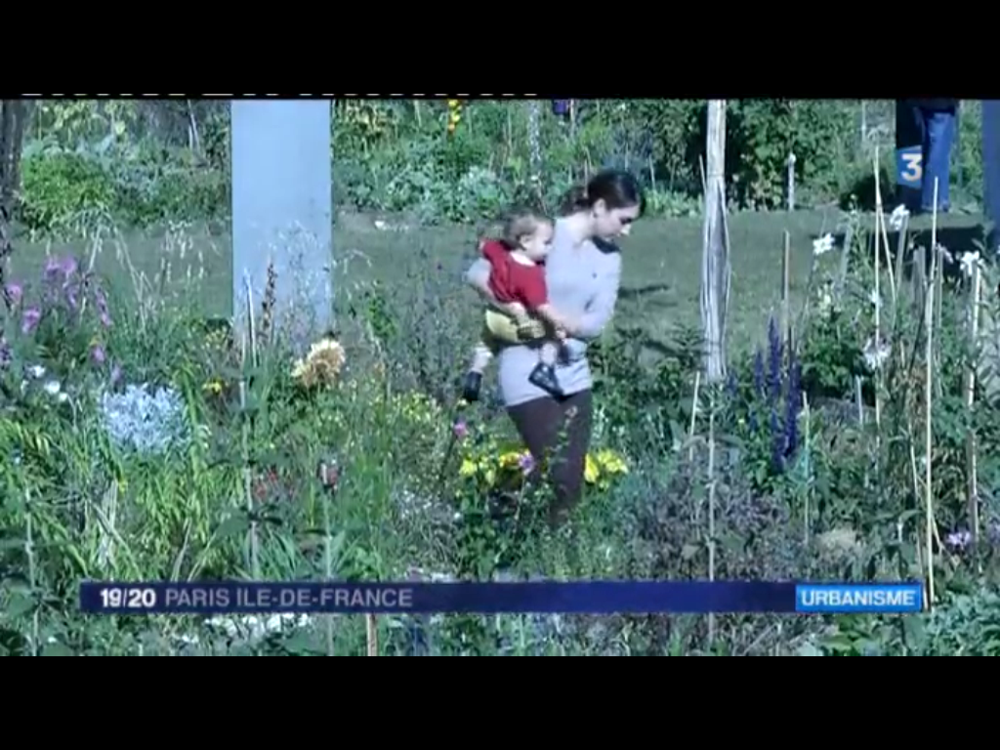
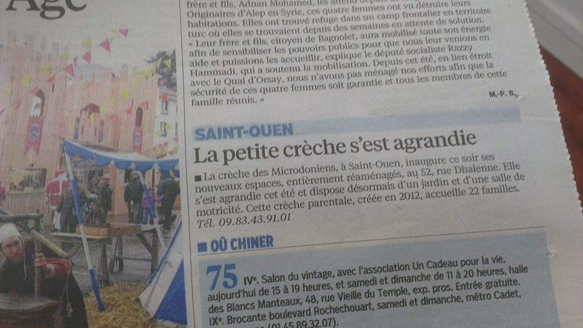
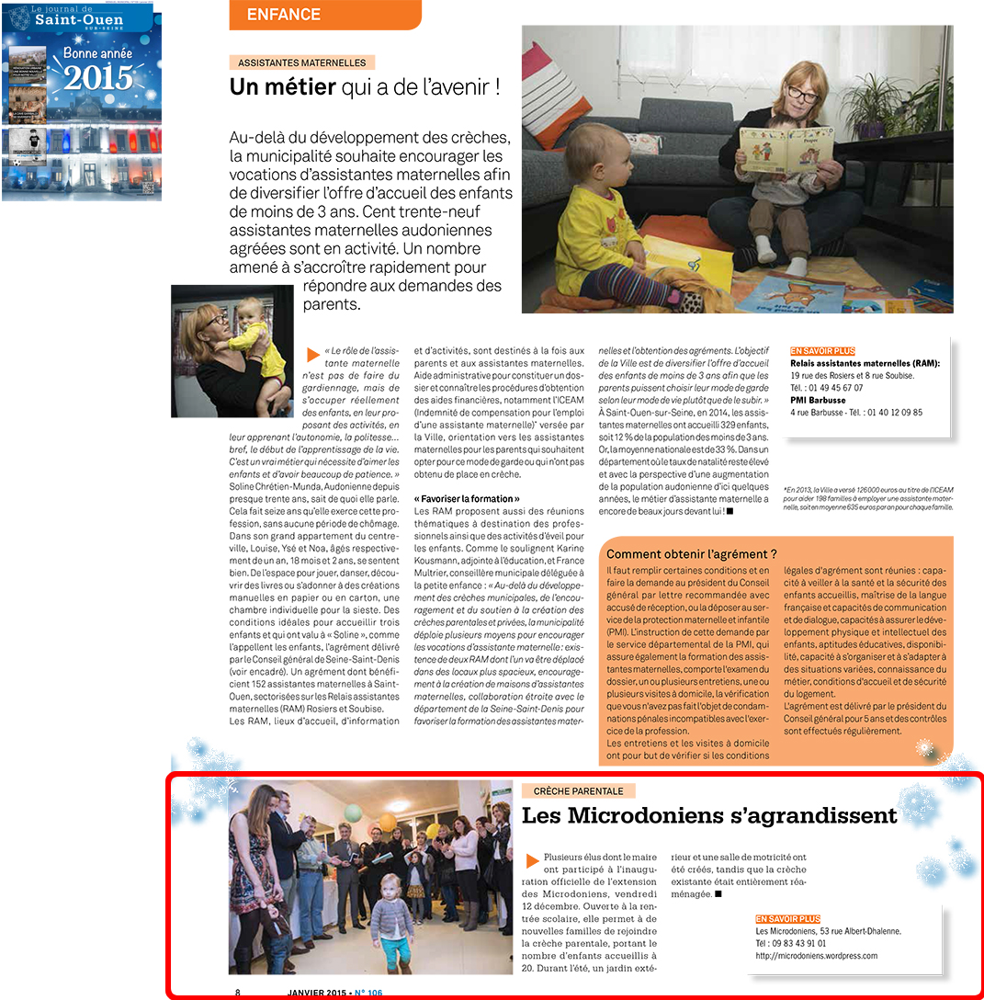

De France 3 au Parisien, de la Gazette de l'ACEPP au Journal de Saint-Ouen — notre petite crèche a fait du bruit depuis sa création.

Dès qu'on parle de Saint-Ouen, un Microdonien est dans les parages ! Les stars du reportage sont Olivia et Gaby, gambadant dans les jardins du Grand Parc. Depuis la diffusion, la crèche a été inondée d'appels — et Olivia et Gaby ont reçu de nombreuses propositions de castings.

Article paru le jour de l'inauguration de la crèche agrandie. Le Parisien couvre l'extension des Microdoniens — de 16 à 22 familles — et le modèle unique de gouvernance parentale.

Le mensuel de la ville consacre un article à l'agrandissement des Microdoniens et à l'inauguration officielle de la crèche étendue.
Un petit caillou dans un océan de besoins. Ce travail collaboratif associe des familles, des collectivités, la CAF, la PMI, des professionnels de la petite enfance et de nombreuses structures locales.
Pour toute demande presse ou partenariat, n'hésitez pas à nous écrire directement.